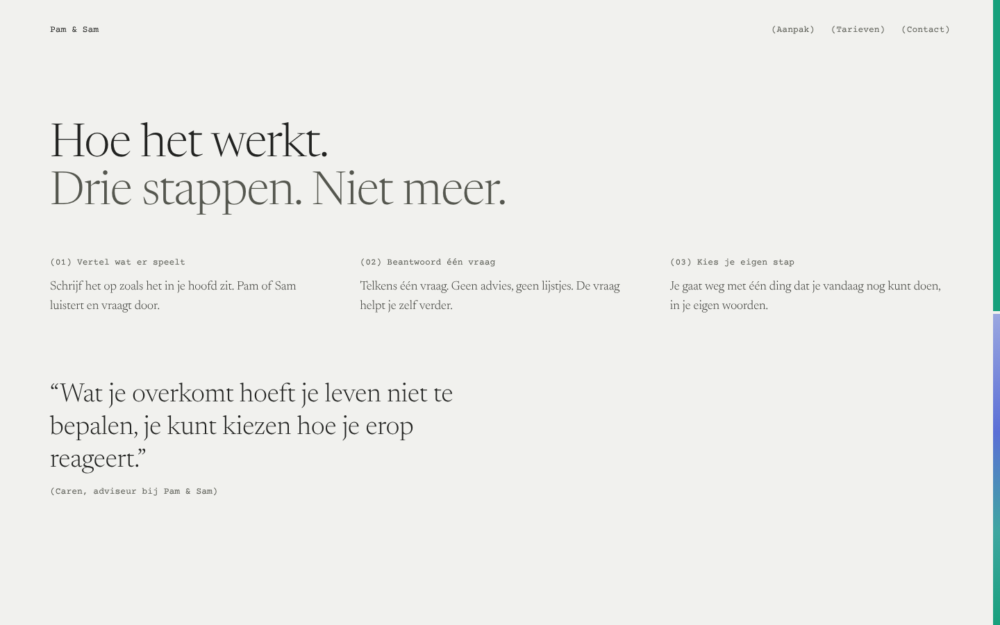
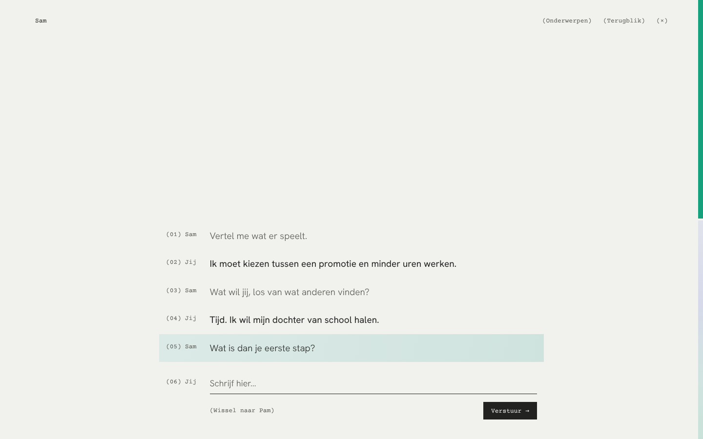
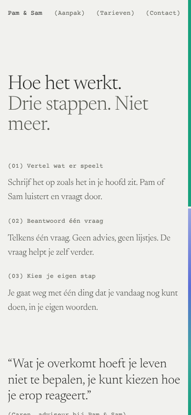
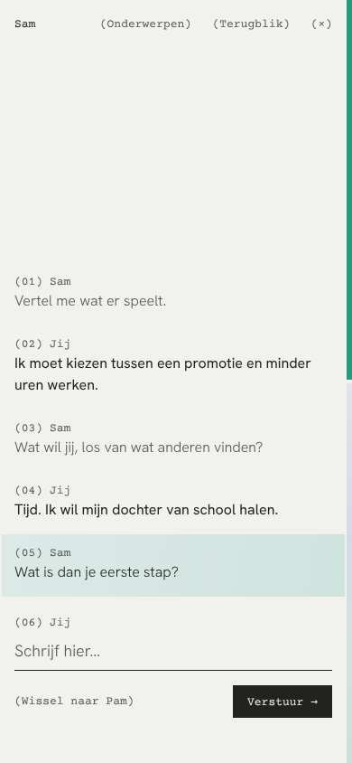

De ongemakkelijk verre route: geen beeld, geen ceremonie. De hele site is een register, zoals de inhoudsopgave rechtsonder in de spread. Het verloop uit het vlak wordt een markering achter de regel die nu telt.

Pam en Sam staan als eerste regels in het register. De strook aan de rand toont beide stemmen tot je kiest.


Het gesprek wordt een genummerd verslag. Alleen de laatste vraag krijgt het verloop, als een markeerstift; de strook toont nu alleen de gekozen stem.




Op de telefoon worden de twee pagina's één kolom; de strook aan de rand blijft.